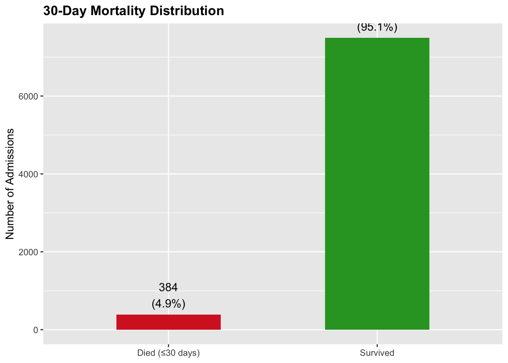

library(tidyverse)── Attaching core tidyverse packages ──────────────────────── tidyverse 2.0.0 ──
✔ dplyr 1.2.0 ✔ readr 2.1.6
✔ forcats 1.0.1 ✔ stringr 1.6.0
✔ ggplot2 4.0.2 ✔ tibble 3.3.1
✔ lubridate 1.9.5 ✔ tidyr 1.3.2
✔ purrr 1.2.1
── Conflicts ────────────────────────────────────────── tidyverse_conflicts() ──
✖ dplyr::filter() masks stats::filter()
✖ dplyr::lag() masks stats::lag()
ℹ Use the conflicted package (<http://conflicted.r-lib.org/>) to force all conflicts to become errorslibrary(here)here() starts at /Users/rebeccabasta/Desktop/Basta-Herber-MADA-projectlibrary(gt)
#| fig-cap: "Distribution of 30-day mortality in the analytic cohort"
analysis_df <- read_csv(
here("data", "processed-data", "analysis_dataset.csv"),
show_col_types = FALSE
)
analysis_df |>
mutate(Outcome = if_else(mortality_30day == 1, "Died (≤30 days)", "Survived")) |>
count(Outcome) |>
mutate(pct = n / sum(n)) |>
ggplot(aes(x = Outcome, y = n, fill = Outcome)) +
geom_col(width = 0.5, show.legend = FALSE) +
geom_text(aes(label = paste0(n, "\n(", scales::percent(pct, 0.1), ")")),
vjust = -0.3, size = 4) +
scale_fill_manual(values = c("Died (≤30 days)" = "#d62728",
"Survived" = "#2ca02c")) +
labs(title = "30-Day Mortality Distribution",
x = NULL, y = "Number of Admissions") +
theme(plot.title = element_text(face = "bold"))